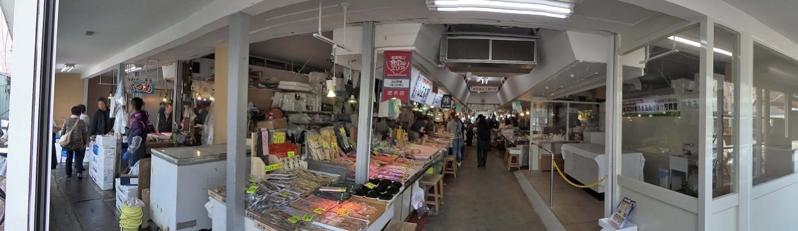
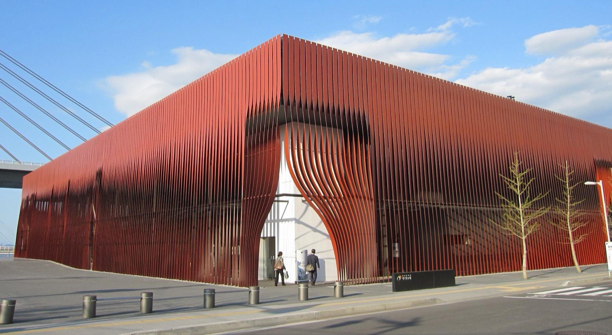

관광객이 없는 혼슈 최북단에서
쓰가루의 술과 말을 즐기며 배우는 살아있는 일본어
혼슈 최북단, 도호쿠의 숨겨진 보석. 한국인 관광객이 거의 없어 현지인들이 외국인에게 호기심과 호의를 가짐.
本州最北端、東北の隠れた宝石。韓国人観光客がほとんどいないため、地元の人々が外国人に好奇心と好意を持っている。
아오모리 사람들과 분위기
青森の人々と雰囲気
東北の人々は最初は寡黙だが、一度会話が始まると限りなく温かい
外国人観光客がほとんどいないので、観光客に対する疲労感が低い方
青森は日本国内でもお酒の消費量が多い地域 — 飲みの場で自然に打ち解ける文化
居酒屋・スナックが小規模カウンター式中心で、店内での会話が自然な構造
4月初めはオフシーズンで店が空いていて、ゆったりした雰囲気
24以上の地元の酒蔵 — 地酒が豊富で、お酒の話から自然に会話が広がる
4월 초 아오모리 날씨
4月初めの青森の天気
기온 3~12°C, 아직 쌀쌀함. 벚꽃은 4월 중순~하순 개화 예정이라 이번 여행에서는 보기 어려움. 대신 봄 직전의 한적한 분위기를 만끽할 수 있음. 따뜻한 외투 필수.
気温3~12°C、まだ肌寒い。桜は4月中旬〜下旬に開花予定で、今回の旅では見られない。その代わり、春直前の静かな雰囲気を満喫できる。暖かいコート必須。
| 日本語 | よみかた | 한국어 설명 | 한자 음훈 |
|---|---|---|---|
| 本州 | ほんしゅう | 혼슈 — 일본 본토의 가장 큰 섬 | 근본 본(本), 고을 주(州) |
| 最北端 | さいほくたん | 최북단 — 가장 북쪽 끝 | 가장 최(最), 북녘 북(北), 끝 단(端) |
| 東北 | とうほく | 도호쿠 — 일본 동북부 지방 (6현) | 동녘 동(東), 북녘 북(北) |
| 隠れた宝石 | かくれたほうせき | 숨겨진 보석 — 아직 알려지지 않은 좋은 곳 | 숨을 은(隠), 보배 보(宝), 돌 석(石) |
| 寡黙 | かもく | 과묵 — 말이 적음. 도호쿠 사람들의 특성으로 자주 묘사됨 | 적을 과(寡), 잠잠할 묵(黙) |
| 温かい | あたたかい | 따뜻한 — 사람의 성격이나 분위기에 사용 | 따뜻할 온(温) |
| 居酒屋 | いざかや | 이자카야 — 일본식 선술집. 안주와 술을 함께 즐기는 곳 | 있을 거(居), 술 주(酒), 집 옥(屋) |
| 地酒 | じざけ | 지자케 — 그 지역에서 양조한 일본 술. 여행지의 자랑 | 땅 지(地), 술 주(酒) |
| 酒蔵 | さかぐら | 사케구라 — 술 양조장 | 술 주(酒), 곳간 장(蔵) |
| 飲みの場 | のみのば | 노미노바 — 술자리, 술 마시는 자리 | 마실 음(飲), 곳 장(場) |
| 打ち解ける | うちとける | 우치토게루 — 마음을 열다, 친해지다. 격식을 풀고 편해진다는 뉘앙스 | 칠 타(打) |
| オフシーズン | おふしーずん | 비수기 — 관광객이 적은 시기 (영어 off-season에서 유래) | — |
| 桜 | さくら | 벚꽃 — 일본의 상징. 4월이 절정 | 벚나무 앵(桜) |
| 肌寒い | はださむい | 하다사무이 — 살짝 쌀쌀한. 「寒い」보다 가볍고 피부에 와닿는 추위 | 살갗 부(肌), 찰 한(寒) |
아오모리 해산물 6곳 하시고주 (はしご酒)
아오모리역 주변 이자카야 6곳을 연속 방문하는 리얼 bar hopping 영상. 가게 분위기와 메뉴를 미리 파악하기 좋음.
青森駅周辺の居酒屋6軒をはしご酒するリアルなbar hopping動画。お店の雰囲気やメニューを事前にチェックできる。
| 0:00 | 오프닝 — 아오모리역 도착 オープニング — 青森駅到着、旅の紹介 |
| 4:00 | 1차: ガレッテリア ダ・サスィーノ 1軒目：ガレッテリア ダ・サスィーノ — イタリアンバー |
| 11:14 | 2차: A-BossA 2軒目：A-BossA — バー |
| 14:54 | 3차: すし居酒屋 樽 — 스시 이자카야 3軒目：すし居酒屋 樽 — 海鮮の注文が参考になる |
| 26:32 | 4차: 三九鮨 — 지역 스시집 4軒目：三九鮨 — 地元の寿司屋 |
| 31:30 | 5차: 炭ばか一代 — 숯불구이 이자카야 5軒目：炭ばか一代 — 炭火焼き居酒屋 |
| 39:24 | 6차: 古川市場 — 아침 놋케동 6軒目：古川市場 — 朝のっけ丼 |
| 48:50 | 마무리: 長尾中華そば — 〆라멘 締め：長尾中華そば — 〆ラーメン |
아오모리 1일 4곳 먹고 마시기
지자케와 향토 안주를 중심으로 한 컴팩트한 bar hopping 영상. 주문 방법과 메뉴 선택 참고.
地酒と郷土おつまみを中心にしたコンパクトなbar hopping動画。注文の仕方やメニュー選びの参考に。
| 0:00 | 오프닝 — 아오모리역 도착 オープニング — 青森駅到着、旅スタート |
| 1:00 | 1차: うまい鮨勘 ゆとろぎ — 역빌딩 스시 1軒目：うまい鮨勘 ゆとろぎ — 駅ビル寿司（計2,079円） |
| 4:30 | 2차: 魚屋 — 지자케, 카라스미, 카이센동 2軒目：魚屋 — 喜久泉·陸奥八仙の地酒、からすみ、海鮮丼 |
| 8:30 | 3차: 浜料理 さとや — 시라코, 타코 3軒目：浜料理 さとや — 白子西京焼き、たこ鉄板焼き |
| 11:30 | 4차: 和食ダイニング 貴 — 마무리 4軒目：和食ダイニング 貴 — 稲村屋の地酒、おでん、うどんで締め |
아오모리 시내 주요 방문지 — 대부분 아오모리역 도보권 내
도착 & 첫인사 | 시장에서 아침, 워터프런트 산책, 첫 이자카야
到着＆初めての挨拶 | 市場で朝食、ウォーターフロント散歩、初めての居酒屋

古川市場・青森魚菜センター
청森시 후루카와 1-11-16 | 아오모리역 동쪽출구 도보 5분
아오모리 시민의 부엌. 식권을 사서 약 30개 가게를 돌며 좋아하는 회와 반찬을 골라 나만의 해산물 덮밥(놋케동)을 만드는 체험. 가게 아주머니에게 "おすすめは？" 물어보는 게 첫 대화의 시작!
青森市民の台所。食券を買って約30店舗を回り、好きなお刺身とおかずを選んで自分だけの海鮮丼（のっけ丼）を作る体験。お店のおばちゃんに「おすすめは？」と聞くのが最初の会話のきっかけ！
市場のおばちゃんに「おすすめは？」でおすすめを聞くと、親切に選んでくれる。津軽弁で「めじゃ〜！」（美味しい！）と言うと喜ばれる。
【のっけ丼】青森魚菜センター本店 — 놋케동 완전 가이드
식권 구매부터 놋케동 완성까지 전 과정을 상세히 보여줌. 방문 전 시스템을 파악해두면 현장에서 여유.
食券の購入からのっけ丼の完成まで全過程を詳しく紹介。訪問前にシステムを把握しておくと現場で余裕。
| 0:00 | 시장 입구 도착 市場入口到着、外観と雰囲気 |
| 1:08 | 식권 구매 방법 食券（チケット）購入方法 — 12枚¥2,200のシステム説明 |
| 10:42 | 놋케동 완성! 시식 のっけ丼完成！トッピング選びの結果と試食 |
| 日本語 | よみかた | 한국어 설명 | 한자 음훈 |
|---|---|---|---|
| 古川市場 | ふるかわいちば | 후루카와 시장 — 아오모리의 재래시장 | 옛 고(古), 내 천(川), 저자 시(市), 마당 장(場) |
| 魚菜センター | ぎょさいセンター | 어채센터 — 생선과 채소를 파는 시장 | 물고기 어(魚), 나물 채(菜) |
| 食券 | しょっけん | 식권 — 음식 구매에 사용하는 티켓 | 먹을 식(食), 증서 권(券) |
| 海鮮丼 | かいせんどん | 해산물 덮밥 — 신선한 생선을 밥 위에 얹은 요리 | 바다 해(海), 고울 선(鮮), 사발 돈(丼) |
| のっけ丼 | のっけどん | 놋케동 — "올려놓다"는 뜻의 방언에서 유래. 직접 재료를 올려 만드는 체험형 덮밥 | — |
| おすすめ | おすすめ | 추천 — 가게에서 가장 많이 쓰는 만능 표현. 「おすすめは？」= 추천은 뭔가요? | — |
| 刺身 | さしみ | 사시미 — 생선회. 날생선을 얇게 썬 것 | 찌를 자(刺), 몸 신(身) |
| ネタ | ネタ | 네타 — 스시/덮밥 위에 올리는 재료. 원래 「種(たね)」를 뒤집은 업계 용어 | — |
| 台所 | だいどころ | 부엌 — 비유적으로 "시민의 부엌"처럼 식재료 공급지를 뜻함 | 대 대(台), 곳 소(所) |
| 贅沢 | ぜいたく | 사치, 호사 — 리뷰에서 "贅沢すぎる"(너무 호사스럽다)로 자주 사용 | 사치 치(贅), 택할 택(沢) |
| 気さく | きさく | 스스럼없는, 친근한 — 사람 성격을 칭찬할 때 사용. 격식 차리지 않는 느낌 | 기운 기(気) |
| 仕組み | しくみ | 구조, 시스템 — 일의 작동 방식. 「食券の仕組み」= 식권 시스템 | 섬길 사(仕), 짤 조(組) |
エーファクトリー
아오모리시 야나가와 1-4-2 | 아오모리역 도보 2분
아오모리역 바로 앞 워터프런트의 세련된 마켓. 1층은 지역 특산품(사과 주스, 과자, 지역 술), 2층은 사과 시드르 양조장에서 비가열 생시드르 시음 가능. 아오모리 사과를 활용한 젤라토도 인기.
青森駅のすぐ前、ウォーターフロントのおしゃれなマーケット。1階は地元の特産品（りんごジュース、お菓子、地酒）、2階はりんごシードル醸造所で非加熱の生シードルの試飲ができる。青森りんごを使ったジェラートも人気。
아오모리역 주변 먹거리 투어 (A-FACTORY 포함)
A-FACTORY 시드르 시음과 내부 분위기를 포함한 아오모리역 주변 먹거리 투어. 5:26부터 A-FACTORY 방문.
A-FACTORYのシードル試飲と店内の雰囲気を含む青森駅周辺グルメツアー。5:26からA-FACTORY訪問。
| 0:00 | 아오모리역 도착 青森駅到着、旅スタート |
| 1:25 | 丸青食堂 — 역전 해산물 식당 丸青食堂 — 駅前の海鮮食堂（海鮮丼） |
| 5:26 | ★ A-FACTORY — 시드르 시음, 기념품 ★ A-FACTORY — シードル試飲、店内、お土産 |
| 8:14 | 助六 — 역 근처 이자카야 助六 — 駅近くの居酒屋 |
| 10:36 | 丸青食堂 재방문 丸青食堂 再訪問 — カレー注文 |
| 日本語 | よみかた | 한국어 설명 | 한자 음훈 |
|---|---|---|---|
| 特産品 | とくさんひん | 특산품 — 그 지역의 대표 산물 | 특별할 특(特), 낳을 산(産), 물건 품(品) |
| 試飲 | しいん | 시음 — 맛을 보기 위해 조금 마셔보는 것 | 시험할 시(試), 마실 음(飲) |
| 醸造所 | じょうぞうしょ | 양조장 — 술을 빚는 장소 | 빚을 양(醸), 만들 조(造), 곳 소(所) |
| 飲み比べ | のみくらべ | 비교 시음 — 여러 종류를 마셔보며 비교. 「食べ比べ」도 같은 패턴 | 마실 음(飲), 견줄 비(比) |
| お土産 | おみやげ | 기념품, 선물 — 여행 시 사가는 것. 일본 문화에서 매우 중요한 관습 | 흙 토(土), 낳을 산(産) |
| 品種 | ひんしゅ | 품종 — 사과·쌀 등의 종류. 아오모리 사과는 다양한 품종으로 유명 | 물건 품(品), 씨 종(種) |
| 非加熱 | ひかねつ | 비가열 — 열처리하지 않은. 생맥주, 생시드르 등에 사용 | 아닐 비(非), 더할 가(加), 더울 열(熱) |
| 迷う | まよう | 헤매다, 고민하다 — 선택지가 많아서 결정 못 하는 상황 | 미혹할 미(迷) |
| おしゃれ | おしゃれ | 세련된, 멋있는 — 장소·옷·사람에 널리 사용. 구어에서 매우 자주 등장 | — |
| 豊富 | ほうふ | 풍부한 — 종류나 양이 많은. 「種類が豊富」가 리뷰의 단골 표현 | 풍성할 풍(豊), 넉넉할 부(富) |

ねぶたの家 ワ・ラッセ
아오모리시 야스카타 1-1-1 | 아오모리역 도보 3분
아오모리의 상징 네부타 축제의 실물 크기 수레를 전시하는 박물관. 축제 역사와 제작 과정을 배울 수 있음. 네부타 이야기는 현지인과의 대화에서 최고의 화제! "ねぶた祭り行ってみたい！"라고 말하면 열정적으로 설명해줌.
青森のシンボル、ねぶた祭りの実物大の山車を展示する博物館。祭りの歴史と制作過程を学べる。ねぶたの話は地元の人との会話で最高の話題！「ねぶた祭り行ってみたい！」と言うと熱心に教えてくれる。
ねぶた祭り（8月2〜7日）は青森最大のイベント。「ラッセラー！」は祭りの掛け声で、ワ・ラッセ見学後に居酒屋で話題にすると盛り上がる。
네부타노이에 와랏세 뮤지엄 산책
실물 크기 네부타 수레 전시, 체험 코너를 생생하게 보여줌. 이자카야에서 "와랏세 갔다 왔어요!" 대화 소재로 활용.
実物大のねぶた山車の展示や体験コーナーを臨場感たっぷりに紹介。居酒屋で「ワ・ラッセ行ってきました！」と会話のネタに。
| 0:00 | 외관, 입구 도착 外観、入口到着 |
| 0:31 | 와랏세 건물 입장 ワ・ラッセの建物に入場 |
| 0:56 | 2층 네부타 뮤지엄 2階ねぶたミュージアム — 展示スタート |
| 2:10 | 축제 구호 체험 祭りの掛け声「ラッセラー！」体験 |
| 2:33 | 마이네부타 만들기 マイねぶた作りコーナー |
| 3:06 | 실물 대형 네부타 수레 実物大の大型ねぶた山車展示 |
| 日本語 | よみかた | 한국어 설명 | 한자 음훈 |
|---|---|---|---|
| 祭り | まつり | 축제 — 일본 문화의 핵심. 각 지역마다 고유한 축제가 있음 | 제사 제(祭) |
| 山車 | だし | 다시 — 축제에서 끌고 다니는 장식 수레 | 뫼 산(山), 수레 차(車) |
| 実物大 | じつぶつだい | 실물 크기 — 실제와 같은 크기 | 열매 실(実), 물건 물(物), 클 대(大) |
| 博物館 | はくぶつかん | 박물관 | 넓을 박(博), 물건 물(物), 집 관(館) |
| 迫力 | はくりょく | 박력, 압도감 — 실물을 보고 감동받을 때 자주 사용 | 핍박할 박(迫), 힘 력(力) |
| 盛り上がる | もりあがる | 분위기가 고조되다 — 축제, 이자카야, 카라오케에서 필수 표현 | 성할 성(盛) |
| 掛け声 | かけごえ | 구호, 호령 — 축제에서 외치는 소리. ラッセラー가 대표적 | 걸 괘(掛), 소리 성(声) |
| 展示 | てんじ | 전시 — 작품이나 물건을 보여주는 것 | 펼 전(展), 보일 시(示) |
| 話題 | わだい | 화제 — 대화의 주제. 「話題にする」= 화제로 삼다 | 말씀 화(話), 제목 제(題) |
| 味わえる | あじわえる | 맛볼 수 있다 — 음식뿐 아니라 경험·분위기에도 사용. 문학적 뉘앙스 | 맛 미(味) |
| 貴重 | きちょう | 귀중한 — 드물고 소중한 | 귀할 귀(貴), 무거울 중(重) |
첫날 밤은 아오모리역 주변 야스카타(安方)·혼마치(本町) 에리어에서 시작. 카운터석에 앉아 첫 대화를 시도해보세요.
初日の夜は青森駅周辺の安方・本町エリアからスタート。カウンター席に座って、最初の会話に挑戦してみましょう。
井戸端 | 安方 1-3-24 | 아오모리역 도보 2분
60년 전통의 대중 이자카야. 모츠니코미(곱창조림)가 명물. 저렴한 가격에 지역 노동자와 직장인이 모이는 진짜 로컬 분위기. 카운터에서 옆 사람과 자연스럽게 대화 시작.
60年の伝統を持つ大衆居酒屋。もつ煮込み（モツニコミ）が名物。リーズナブルな価格で地元の労働者やサラリーマンが集まるリアルなローカルの雰囲気。カウンターで隣の人と自然に会話が始まる。
リーズナブルでローカル感たっぷり。地酒を頼むと店主がおすすめしてくれる。
一直 | 安方 2-3-17
숙성 흑된장 모츠 스튜가 간판 메뉴. 카운터석 중심 구조라 주인장, 옆 손님과의 대화가 자연스러움. 지역 술(田酒 등) 라인업 풍부.
熟成黒味噌のもつ煮込みが看板メニュー。カウンター席中心の造りで、店主や隣のお客さんとの会話が自然に生まれる。地酒（田酒など）のラインナップが充実。
津軽じょっぱり漁屋酒場 青森本町店
매일 저녁 7시 쓰가루 샤미센 생연주! 향토 요리 센베이지루(せんべい汁)도 맛볼 수 있음. 라이브 공연 중 "ラッセラー！" 구호를 함께 외치면 분위기 폭발.
毎晩7時に津軽三味線の生演奏！郷土料理のせんべい汁も味わえる。ライブ中に「ラッセラー！」の掛け声を一緒に叫ぶと雰囲気爆発。
三味線ライブがあるので、初日の雰囲気づくりに最高。カウンターに座れば最前列の観覧席！
スナック ニューみちこ | 安方 1-4-12 | 아오모리역 도보 5분
마마상의 경쾌한 쓰가루벤이 매력적인 역 근처 스낵바. 단골 손님이 많지만 처음 오는 손님에게도 활발하게 대화를 걸어줌. 여행 정보와 맛집 추천을 마마상에게 물어보기 좋은 곳.
ママさんの軽快な津軽弁が魅力的な駅近くのスナック。常連客が多いが、初めてのお客さんにも積極的に話しかけてくれる。旅行情報やグルメのおすすめをママさんに聞くのにぴったり。
「初めてなんですけど入れますか？」の一言でOK。追加ドリンク¥800〜。カラオケ1曲¥200。
ダフネ | 安方 1-10-19 | 아오모리역 도보 8분
40년 경력의 베테랑 마마상이 운영. 아오모리의 숨겨진 관광 명소와 맛집을 빠삭하게 아는 비공식 관광안내소. 세련된 분위기에 술 종류도 풍부.
40年のキャリアを持つベテランのママさんが営む。青森の隠れた観光名所やグルメに詳しい、非公式の観光案内所。洗練された雰囲気にお酒の種類も豊富。
初日の夜にここで青森のローカル情報を仕入れると、残りの旅程が豊かになる。現金のみ。
| 日本語 | よみかた | 한국어 설명 | 한자 음훈 |
|---|---|---|---|
| 大衆居酒屋 | たいしゅういざかや | 대중 이자카야 — 서민적인 선술집. 가격이 저렴하고 분위기가 캐주얼 | 큰 대(大), 무리 중(衆), 있을 거(居), 술 주(酒), 집 옥(屋) |
| もつ煮込み | もつにこみ | 곱창 조림 — 내장을 된장/간장으로 푹 조린 이자카야 정석 안주 | 삶을 자(煮), 넣을 입(込) |
| 名物 | めいぶつ | 명물 — 그 가게/지역의 대표 메뉴나 특산물 | 이름 명(名), 물건 물(物) |
| カウンター席 | かうんたーせき | 카운터석 — 주인과 마주보는 좌석. 대화의 핵심 자리 | 자리 석(席) |
| 看板メニュー | かんばんメニュー | 간판 메뉴 — 그 가게를 대표하는 메뉴 | 볼 간(看), 판 판(板) |
| 三味線 | しゃみせん | 샤미센 — 일본 전통 3현 악기. 쓰가루 샤미센은 특히 빠르고 격렬 | 석 삼(三), 맛 미(味), 줄 선(線) |
| 生演奏 | なまえんそう | 생연주 — 라이브 공연. 「生」= 날것, 라이브의 뉘앙스 | 날 생(生), 연주할 연(演), 연주할 주(奏) |
| 郷土料理 | きょうどりょうり | 향토 요리 — 그 지역 특유의 전통 음식 | 시골 향(郷), 흙 토(土), 헤아릴 료(料), 다스릴 리(理) |
| スナック | すなっく | 스낵바 — 마마상이 운영하는 소규모 바. 대화·카라오케 중심 | — |
| ママさん | ままさん | 마마상 — 스낵바의 여주인. 존경과 친밀함을 담은 호칭 | — |
| 常連 | じょうれん | 단골 — 자주 오는 손님. 「常連になる」= 단골이 되다 | 항상 상(常), 이을 련(連) |
| 居心地がいい | いごこちがいい | 분위기가 편안하다 — 장소의 편안함을 칭찬하는 최고의 표현 | 있을 거(居), 마음 심(心), 땅 지(地) |
| 一杯やる | いっぱいやる | 한 잔 하다 — 술을 마시다의 캐주얼 표현. 남성적 뉘앙스 | 한 일(一), 잔 배(杯) |
| 初めて | はじめて | 처음 — 「初めてなんですけど…」= 처음인데요… (스낵바 입장 시 필수) | 처음 초(初) |
| 洗練された | せんれんされた | 세련된 — 격조 있고 품격 있는. 고급 스낵바나 바를 묘사할 때 | 씻을 세(洗), 단련할 련(練) |
항공편 도착 시간에 맞춰 공항 리무진버스 운행. 1번 정류장에서 "青森駅" 행 탑승. Suica/PASMO 사용 가능.
航空便の到着時間に合わせて空港リムジンバスが運行。1番乗り場から「青森駅」行きに乗車。Suica/PASMO利用可能。
시내 이동: 후루카와 시장·A-FACTORY·와랏세 모두 아오모리역 도보 5분 이내. 저녁 이자카야(安方)도 도보 2~5분.
市内移動：古川市場・A-FACTORY・ワ・ラッセ、すべて青森駅から徒歩5分以内。夜の居酒屋（安方）も徒歩2〜5分。
혼마치(스낵바 거리): 아오모리역에서 도보 10분 또는 택시 ¥700~1,000.
本町（スナック街）：青森駅から徒歩10分またはタクシー¥700〜1,000。
Day 1에서 배운 여행 정보와 일본어를 확인해보세요!
아사무시 온천 소풍 & "단골" 되기 작전
浅虫温泉
아오모리역에서 아오이모리 철도로 약 20분 | 아사무시온천역 하차
"도호쿠의 아타미"로 불리는 해변 온천마을. 역 동쪽은 좁은 골목에 옛 료칸이 늘어선 전통 온천가, 서쪽은 무쓰만(陸奥湾)이 보이는 해변 리조트. 온천 달걀 만들기 체험, 해변 산책, 공중목욕탕에서 현지 어르신과 대화하기에 최적.
"東北の熱海"と呼ばれる海辺の温泉街。駅東側は細い路地に古い旅館が並ぶ伝統的な温泉街、西側は陸奥湾が見える海辺のリゾート。温泉たまご作り体験、海辺の散策、公衆浴場で地元のお年寄りとの会話に最適。
센토 문화: 일본의 공중목욕탕은 동네 사교장 같은 곳. 자연스럽게 인사를 나누거나 가벼운 대화가 오가는 분위기. 외국인이 드문 곳이라 호기심 어린 질문을 받을 수도.
銭湯文化: 日本の公衆浴場は町内の社交場のような場所。自然に挨拶を交わしたり軽い会話が生まれる雰囲気。外国人が珍しい場所なので、興味津々な質問を受けることも。
아사무시 온천 마을 산책 & 먹거리 완전 가이드
온천마을 산책, 식당, 수족관, 명물 먹거리를 상세히 소개. 동선 계획에 최적.
温泉街の散策、食堂、水族館、名物グルメを詳しく紹介。動線計画に最適。
| 0:00 | 아사무시 온천 소개, 마을 전경 浅虫温泉紹介、街の全景 |
| 0:25 | 正立食堂 — 현지 식당에서 해산물 정식 地元の食堂で海鮮定食 |
| 7:24 | 아사무시 수족관 — 무쓰만 해양 생물 浅虫水族館 — 陸奥湾の海洋生物 |
| 18:27 | 道の駅 ゆ〜さ浅虫 — 로컬 마켓, 온천 달걀 ローカルマーケット、温泉たまご |
| 22:48 | 永井久慈良餅店 — 120년 전통 떡집 (명물 쿠지라모찌) 120年の伝統餅屋（名物くじら餅） |
| 24:14 | 鶴亀屋食堂 — 초대형 참치 덮밥으로 유명한 식당 超大盛りマグロ丼で有名な食堂 |
아사무시에서 돌아와 아오모리역 주변에서 낮술. 일본 시골의 매력 = 낮술이 자연스러움! 점심부터 여는 이자카야에서 현지 직장인/어르신들과 가볍게 한 잔.
浅虫から戻って青森駅周辺で昼飲み。日本の田舎の魅力＝昼飲みが自然なこと！昼から開いている居酒屋で地元の会社員やお年寄りと軽く一杯。
추천: 역 앞 "おさない" — 아오모리 향토 요리 전문. 호타테(가리비) 미소시루가 유명. 항상 줄이 있을 정도로 현지인에게도 인기.
おすすめ: 駅前の「おさない」— 青森郷土料理専門。ホタテの味噌汁が名物。いつも行列ができるほど地元の人にも人気。
둘째 날은 어제와 다른 이자카야로 시작하되, 2차는 어제 갔던 스낵바 재방문! 같은 가게에 두 번 가면 "단골"이 됨.
2日目は昨日とは別の居酒屋からスタートしつつ、2次会は昨日行ったスナックバーに再訪！同じ店に2回行けば「常連」になれる。
ねぶたの國 たか久 | 本町 5-6-11
150석 규모의 대형 이자카야. 매일 저녁 7시 쓰가루 샤미센 생연주 + 네부타 퍼포먼스. 향토 요리 풀코스를 즐길 수 있으며, 분위기가 축제장 같아 모르는 사람과도 자연스럽게 어울림.
150席規模の大型居酒屋。毎日夜7時に津軽三味線の生演奏＋ねぶたパフォーマンス。郷土料理フルコースを楽しめて、お祭り会場のような雰囲気で知らない人とも自然に打ち解ける。
酒肴旬 三ツ石 | 安方 2-7-33
아오모리현 내 24개 양조장의 지자케(地酒)를 전부 갖추고 있는 술 애호가의 성지. 주인장이 취향에 맞는 술을 추천해줌.
青森県内24の酒蔵の地酒をすべて揃えている酒好きの聖地。店主が好みに合ったお酒を薦めてくれる。
주문 팁: "田酒(でんしゅ)" — 아오모리를 대표하는 프리미엄 지자케. 술 좋아하면 꼭 시켜볼 것.
注文のコツ:「田酒（でんしゅ）」— 青森を代表するプレミアム地酒。お酒好きなら必ず頼んでみるべし。
魚・肉・地酒 弐乃助 | 新町 1-9-19
해산물과 고기, 지자케를 폭넓게 즐길 수 있는 이자카야. 영어 메뉴가 있어 일본어가 부족할 때 백업 옵션으로도 좋음.
海鮮と肉、地酒を幅広く楽しめる居酒屋。英語メニューがあるので日本語が足りない時のバックアップにも良い。
mini club MyBoo | 本町 2-6-4 フェニックスビルB1F
2006년 오픈, 혼마치의 터줏대감 스낵바. 카라오케가 없어 대화에 집중할 수 있는 곳. 투명한 가격 체계로 처음 가도 안심. 첫 방문 시 "ナイスタ見た"라고 하면 보틀 ¥3,000 할인 혜택.
2006年オープン、本町の老舗スナックバー。カラオケがないので会話に集中できるお店。明朗会計で初めてでも安心。初来店時「ナイスタ見た」と言えばボトル¥3,000割引特典あり。
2차 추천: 어제 갔던 뉴미치코나 다프네에 재방문해도 좋음. "昨日も来たよ！" 한마디면 마마상이 기억해줌.
2次会おすすめ: 昨日行ったニューミチコやダフネに再訪もあり。「昨日も来たよ！」の一言でママさんが覚えてくれる。
일본주 좋아하는 미국인을 아오모리 이자카야에 데려간 결과
외국인이 아오모리 이자카야에서 지자케를 즐기는 리얼 영상. 주문 방법과 현지인과의 자연스러운 대화 분위기를 파악하기 좋음.
外国人が青森の居酒屋で地酒を楽しむリアル動画。注文方法や地元の人との自然な会話の雰囲気がわかる。
| 0:00 | 오프닝 — 아오모리 이자카야 酒とおでん 八屋 도착 オープニング — 青森居酒屋 酒とおでん 八屋到着 |
| 2:00 | 첫 주문 — 喜久泉(기쿠이즈미) 지자케, 오뎅 初注文 — 喜久泉の地酒、おでん |
| 6:00 | 향토 요리 — 下北産タコ(시모키타 문어), 貝焼き味噌(가이야키 미소) 郷土料理 — 下北産タコ、貝焼き味噌 |
| 10:00 | 지자케 시음 — 豊盃(호하이), 七力(나나리키), 七郎兵衛 地酒利き酒 — 豊盃、七力、七郎兵衛 |
| 15:00 | あんこうの共和え(아귀 공화에) + 현지인과 대화 あんこうの共和え＋地元の人と会話 |
| 19:00 | 茶飯(차메시)으로 〆 + 마무리 소감 茶飯で〆＋まとめ感想 |
| 日本語 | よみかた | 한국어 설명 | 한자 음훈 |
|---|---|---|---|
| 温泉 | おんせん | 온천 — 화산 지대에서 솟는 뜨거운 물. 아사무시 온천은 아오모리 대표 온천지 | 따뜻할 온(温), 샘 천(泉) |
| 公衆浴場 | こうしゅうよくじょう | 공중목욕탕 — 동네 센토(銭湯)도 이에 포함. 지역 커뮤니티 공간 | 공변될 공(公), 무리 중(衆), 목욕할 욕(浴), 마당 장(場) |
| 昼飲み | ひるのみ | 낮술 — 점심시간부터 술 마시는 것. 아사무시 온천 후 낮술은 최고의 사치 | 낮 주(昼), 마실 음(飲) |
| 郷土料理 | きょうどりょうり | 향토 요리 — 그 지역 고유의 전통 음식. 아오모리는 せんべい汁, 石焼料理 등 | 시골 향(郷), 흙 토(土), 헤아릴 료(料), 다스릴 리(理) |
| 地酒 | じざけ | 지역 술 — 그 지방에서 양조한 일본주. 「この辺の地酒ありますか？」로 주문 | 땅 지(地), 술 주(酒) |
| 居酒屋 | いざかや | 이자카야 — 일본식 선술집. 안주와 술을 함께 즐기는 곳 | 있을 거(居), 술 주(酒), 집 옥(屋) |
| 三味線 | しゃみせん | 샤미센 — 일본 전통 3현 악기. 쓰가루 샤미센은 빠르고 격렬한 연주로 유명 | 석 삼(三), 맛 미(味), 줄 선(線) |
| 刺身 | さしみ | 사시미 — 생선회. 아오모리는 ヒラメ(광어)와 ホタテ(가리비) 사시미가 유명 | 찌를 자(刺), 몸 신(身) |
| 帆立 | ほたて | 가리비 — 아오모리 무쓰만의 특산물. 호타테 사시미·구이 모두 절품 | 돛 범(帆), 설 립(立) |
| 常連 | じょうれん | 단골 — 자주 찾아오는 손님. 3박이면 같은 가게 재방문으로 단골 가능 | 항상 상(常), 이을 련(連) |
| 飲み放題 | のみほうだい | 음료 무제한 — 정해진 시간 동안 마음껏 마시는 시스템. みゅう는 120분 ¥4,000 | 마실 음(飲), 놓을 방(放), 제목 제(題) |
| 予約 | よやく | 예약 — 인기 이자카야는 予約必須(예약 필수). 호텔 프론트에 부탁하면 전화 예약 가능 | 미리 예(予), 약속할 약(約) |
| 海鮮 | かいせん | 해산물 — 바다에서 나는 식재료. 아오모리는 津軽海峡의 해산물이 풍부 | 바다 해(海), 고울 선(鮮) |
| 足湯 | あしゆ | 족탕 — 발만 담그는 온천. 아사무시온천역 근처에 무료 족탕 있음 | 발 족(足), 뜨거울 탕(湯) |
아오이모리 철도: 아오모리역 4번 홈에서 탑승. Suica 사용 가능. 약 30분 간격 운행.
青い森鉄道: 青森駅4番ホームから乗車。Suica利用可。約30分間隔で運行。
아사무시 마을 내: 역에서 온천가·해변 모두 도보 10분 이내. 무료 족탕(足湯)도 역 근처에 있음.
浅虫町内: 駅から温泉街・海辺ともに徒歩10分以内。無料の足湯も駅の近くにあり。
복귀: 같은 노선으로 아오모리역까지 20분. 저녁 이자카야 전에 여유롭게 돌아올 것.
帰り: 同じ路線で青森駅まで20分。夕方の居酒屋前に余裕を持って戻ること。
Day 2에서 배운 온천·이자카야·일본어를 확인해보세요!
로컬처럼 하루 보내기 & 마지막 밤 풀파워
도호쿠의 센토는 아침 일찍 여는 곳이 많음. 朝風呂(아사부로, 아침 목욕)는 현지인의 일상. 동네 센토에서 아침부터 목욕하며 어르신들과 대화.
東北の銭湯は朝早くから開いているところが多い。朝風呂は地元の人の日常。町の銭湯で朝から入浴しながらお年寄りと会話。
아오모리시 내 센토를 검색해서 가장 가까운 곳으로 방문. 입장료 대부분 ¥350~450.
青森市内の銭湯を検索して一番近いところへ。入場料はほとんど¥350〜450。
쓰가루벤 활용: "なんぼこのゆあずましいなぁ" (이 온천 정말 기분 좋다~) → 현지인 감동 포인트!
津軽弁活用: 「なんぼこのゆあずましいなぁ」（このお湯、本当に気持ちいいなぁ〜）→ 地元の人が感動するポイント！
마지막 온전한 하루. 시내를 여유롭게 돌아보며 현지인의 속도로 생활해보기.
最後の丸一日。市内をゆっくり回りながら地元の人のペースで過ごしてみる。
3일차 밤은 이 여행의 하이라이트. 새로운 이자카야와 함께, 이미 친해진 스낵바에서 송별회 분위기를 만들어보세요.
3日目の夜はこの旅のハイライト。新しい居酒屋とともに、すでに仲良くなったスナックバーで送別会ムードを作ってみよう。
ふくろう | 아오모리역 근처
카운터 앞에 그날 잡은 신선한 생선이 줄지어 있는 정통 대중 이자카야. 현지인 단골이 많아 로컬 분위기 100%. "동일본의 후쿠로"로 불리는 명점.
カウンターの前にその日獲れた新鮮な魚がずらりと並ぶ正統派大衆居酒屋。地元の常連が多くローカル感100%。「東日本のふくろう」と呼ばれる名店。
石焼料理 | 아오모리 향토 요리
뜨거운 돌에 해산물과 된장을 넣어 끓이는 아오모리 특유의 향토 요리. 테이블에서 돌을 넣는 순간 "지글지글" 소리가 장관!
熱い石に海鮮と味噌を入れて煮る青森特有の郷土料理。テーブルで石を入れた瞬間「じゅわ〜っ」と音が立つのが圧巻！
ラウンジバー みゅう | 本町 5-3-1 たかみつビル1F
카운터석과 넓은 홀을 겸비한 라운지 스낵바. 외국인 손님을 명시적으로 환영하며, 카드·전자머니·QR 결제 모두 가능. 가끔 라이브 공연도 열림.
カウンター席と広いホールを兼ね備えたラウンジスナックバー。外国人のお客さんを明確に歓迎しており、カード・電子マネー・QR決済すべて対応。たまにライブ公演も開催。
마지막 밤 추천 동선: 이자카야 1차 → 단골 스낵바(뉴미치코 or 다프네) 재방문 2차 → みゅう에서 3차. 단골 가게에서 "せばだば、まだな！(그럼, 또 보자!)" 인사로 마무리.
最後の夜おすすめ動線: 居酒屋1次会 → 馴染みのスナック（ニューミチコ or ダフネ）再訪2次会 → みゅうで3次会。常連の店で「せばだば、まだな！（じゃあ、またな！）」の挨拶で締めくくり。
스낵에 가볼까 #1 — 아오모리 번화가 스낵바 체험
아오모리 시내 번화가의 실제 스낵바 방문 영상. 입장부터 마마상과의 대화, 분위기를 생생하게 보여줌. 처음 스낵바에 가기 전 필수 시청.
青森市内繁華街の実際のスナックバー訪問動画。入店からママさんとの会話、雰囲気をリアルに紹介。初めてスナックに行く前に必見。
| 0:00 | 오프닝 — 아오모리 번화가(혼마치) 야경, 스낵바 거리 オープニング — 青森繁華街（本町）夜景、スナック街 |
| 2:00 | 입장 — 스낵바 문 열기, 마마상 첫 인사 入店 — スナックのドアを開ける、ママさん初挨拶 |
| 5:00 | 카운터 분위기 — 주문, 마마상과 쓰가루벤 대화 カウンターの雰囲気 — 注文、ママさんと津軽弁で会話 |
| 9:00 | 단골손님 합류 — 현지인과 자연스러운 교류 常連さん合流 — 地元の人と自然な交流 |
| 12:30 | 마무리 — 퇴장 인사, 스낵바 체험 소감 締め — 退店の挨拶、スナック体験の感想 |
| 日本語 | よみかた | 한국어 설명 | 한자 음훈 |
|---|---|---|---|
| 銭湯 | せんとう | 센토 — 동네 공중목욕탕. 입장료 ¥350~450으로 저렴. 지역 커뮤니티 공간 | 돈 전(銭), 뜨거울 탕(湯) |
| 朝風呂 | あさぶろ | 아침 목욕 — 아침 일찍 센토에서 입욕하는 것. 전날 술 마신 후 최고의 해장 | 아침 조(朝), 바람 풍(風), 어조사 려(呂) |
| 喫茶店 | きっさてん | 킷사텐 — 옛날 스타일 다방/카페. 소와(昭和) 분위기의 레트로 공간 | 마실 끽(喫), 차 다(茶), 가게 점(店) |
| お通し | おとおし | 오토시 — 이자카야 착석 시 자동으로 나오는 기본 안주. 좌석료 겸용 (¥300~500) | — |
| 渋い | しぶい | 시부이 — 원래 '떫은'이지만, 멋지게 낡은·시크한의 뉘앙스로 사용. 오래된 이자카야 칭찬 시 | 떫을 삽(渋) |
| 石焼 | いしやき | 돌구이 — 뜨거운 돌 위에서 조리하는 방식. いし焼ニノ助의 대표 조리법 | 돌 석(石), 구울 소(焼) |
| 味噌 | みそ | 된장 — 일본 발효 조미료의 대표. 味噌焼き(된장구이)는 이자카야 인기 메뉴 | 맛 미(味), 된장 조(噌) |
| 常連 | じょうれん | 단골 — 자주 찾아오는 손님. Day 3이면 재방문으로 「常連みたいだね」라고 들을 수 있음 | 항상 상(常), 이을 련(連) |
| 送別会 | そうべつかい | 송별회 — 떠나는 사람을 위한 모임. 마지막 밤 스낵바에서 자연스러운 작별 분위기 | 보낼 송(送), 나눌 별(別), 모일 회(会) |
| 圧巻 | あっかん | 압권 — 압도적으로 훌륭한 장면. 네부타 와랏세의 실물 네부타를 보고 자주 쓰는 표현 | 누를 압(圧), 책 권(巻) |
| 美術館 | びじゅつかん | 미술관 — 아오모리 현립미술관은 나라 요시토모의 「あおもり犬」으로 유명 | 아름다울 미(美), 재주 술(術), 집 관(館) |
| 土産 | みやげ | 기념품 — お土産(おみやげ). A-FACTORY에서 시드르·사과 과자 등 구매 | 흙 토(土), 낳을 산(産) |
시내 도보 중심: Day 3은 아오모리 시내에서 자유롭게 보내는 날. 주요 스팟 모두 아오모리역 도보 10분 이내.
市内徒歩中心: Day 3は青森市内で自由に過ごす日。主要スポットすべて青森駅から徒歩10分以内。
아오모리 현립미술관 / 산나이마루야마 유적: 시영 버스 "三内丸山遺跡" 행 약 20분 / ¥310. 아오모리역 동구 6번 정류장에서 탑승.
青森県立美術館 / 三内丸山遺跡: 市営バス「三内丸山遺跡」行き約20分 / ¥310。青森駅東口6番乗り場から乗車。
야간: 혼마치 스낵바 거리 → 아오모리역 호텔: 도보 10분 또는 택시 ¥700~1,000.
夜間: 本町スナック街 → 青森駅ホテル: 徒歩10分またはタクシー¥700〜1,000。
Day 3에서 배운 센토·이자카야·스낵바 일본어를 확인해보세요!
아침 여유 & 출발
마무리: 가게를 나갈 때 "また来ます！(또 올게요!)"로 인사하면 깔끔.
締めくくり: お店を出る時に「また来ます！」と挨拶すればスマート。
공항 리무진버스: 아오모리역 정면 1번 정류장에서 탑승. 출발편 시간에 맞춰 운행 (약 1시간~1시간 30분 전 출발). Suica/PASMO 사용 가능.
空港リムジンバス: 青森駅正面1番乗り場から乗車。出発便の時間に合わせて運行（約1時間〜1時間30分前出発）。Suica/PASMO利用可。
주의: 일요일·공휴일은 버스 배차가 줄어듬. 시간 여유를 두고 출발할 것.
注意: 日曜・祝日はバスの本数が減る。時間に余裕を持って出発すること。
택시 대안: 아오모리역→공항 약 30분, ¥4,000~5,000. 짐이 많거나 시간이 빠듯할 때.
タクシー代替: 青森駅→空港 約30分、¥4,000〜5,000。荷物が多い時や時間がギリギリの時に。
| 日本語 | よみかた | 한국어 설명 | 한자 음훈 |
|---|---|---|---|
| 出発 | しゅっぱつ | 출발 — 旅の出発, 여행의 출발. 공항 안내판에서 자주 볼 수 있는 단어 | 날 출(出), 칠 발(発) |
| 空港 | くうこう | 공항 — 아오모리 공항은 시내에서 버스 35분 거리 | 빌 공(空), 항구 항(港) |
| 搭乗 | とうじょう | 탑승 — 搭乗口(탑승구), 搭乗券(탑승권)으로 자주 사용 | 탈 탑(搭), 탈 승(乗) |
| お土産 | おみやげ | 기념품 — 일본 여행의 필수 문화. A-FACTORY에서 사과 과자·시드르 추천 | 흙 토(土), 낳을 산(産) |
| また来ます | またきます | 또 올게요 — 가게를 나갈 때 쓰는 인사. 주인장이 기뻐하는 마법의 한마디 | 올 래(来) |
| お世話になりました | おせわになりました | 신세 졌습니다 — 호텔 체크아웃, 가게 마지막 방문 시 감사 인사 | 세상 세(世), 이야기 화(話) |
| 荷物 | にもつ | 짐 — 手荷物(てにもつ) = 기내 수하물, 預け荷物 = 위탁 수하물 | 짐 하(荷), 물건 물(物) |
| 名残惜しい | なごりおしい | 아쉽다 — 헤어짐이 아쉬울 때. 여행 마지막 날의 감정을 표현하는 단어 | 이름 명(名), 남을 잔(残), 아까울 석(惜) |
| 思い出 | おもいで | 추억 — 여행의 思い出(추억). 「いい思い出になりました」= 좋은 추억이 되었습니다 | 생각할 사(思), 날 출(出) |
| 気をつけて | きをつけて | 조심해서 — 작별 인사로 자주 쓰임. 「気をつけて帰ってね」= 조심해서 돌아가 | 기운 기(気) |
마지막 날! 출발과 작별 인사 일본어를 확인해보세요.
아오모리(쓰가루 지방)의 방언. "프랑스어처럼 들린다"고 할 정도로 독특한 억양. 몇 마디 알아두면 현지에서 재미있는 반응을 볼 수 있음.
프랑스어처럼 들리는 쓰가루벤 회화
쓰가루벤의 독특한 억양과 리듬을 체감할 수 있는 대표 영상. 자막과 비교하며 들으면 방언의 재미를 느낄 수 있음.
津軽弁の独特なイントネーションとリズムを体感できる代表的な動画。字幕と比べながら聴くと方言の面白さがわかる。
| 0:00 | 일상 인사 — "おばんです"(저녁 인사), "んだ"(맞아) 등 기본 표현이 자연스러운 대화에서 등장 |
| 0:30 | 음식 관련 — "めじゃ〜"(맛있다), "しゃっこい"(차갑다) 등 이자카야에서 바로 쓸 수 있는 표현 |
| 1:30 | 감정 표현 — "わいは！"(놀람), "けっぱれ"(힘내) 등 리액션 표현 |
| 3:00 | 작별 인사 — "せばだば、まだな！"(그럼, 또 보자!) 가게 나갈 때 사용 |
에반게리온을 쓰가루벤으로 말하면?
유명 애니메이션 대사를 쓰가루벤으로 변환. "んだ"(맞아)를 자연스럽게 쓰는 패턴 학습에 최적. 이자카야에서 "이 영상 봤어요!" 하면 대화 소재로 최고.
有名アニメのセリフを津軽弁に変換。「んだ」（そうだ）を自然に使うパターン学習に最適。居酒屋で「この動画見ました！」と言えば会話のネタに。
| 0:00 | 오프닝 — 쓰가루벤으로 변환된 명대사, "んだんだ" 등 맞장구 패턴 관찰 |
| 1:00 | 감정 표현 대사 — "わいは！" 등 감탄사가 쓰가루벤으로 어떻게 바뀌는지 |
| 2:00 | 일상 대화 변환 — 표준어와 쓰가루벤 비교로 "けやぐ"(친구) 등의 단어 학습 |
쓰가루벤 코미디 콩트
쓰가루벤 특유의 유머 감각. "どさ？ゆさ！"(어디가? 목욕탕!) 세계 최단 회화 등의 유명 패턴이 코미디 속에 자연스럽게 등장.
津軽弁ならではのユーモア感覚。「どさ？ゆさ！」（どこ行く？お風呂！）世界最短の会話など有名パターンがコントに自然と登場。
| 0:00 | 콩트 시작 — 쓰가루벤 일상회화 전개, "めじゃ" "んだ" 등 핵심 표현 반복 |
| 1:00 | "どさ？ゆさ！" 등 유명 쓰가루벤 짧은 대화가 코미디 소재로 등장 |
| 2:00 | "なんぼ？"(얼마?), "けっぱれ"(힘내!) 등 실용 표현을 콩트 맥락에서 학습 |
| 영상 | 채널 | 내용 요약 |
|---|---|---|
| 쓰가루벤 강좌 모음 | 다수 | 쓰가루벤 일상회화 강좌, 여행에서 쓸 수 있는 표현 정리 |
| すんたろす 채널 | すんたろす | 쓰가루벤 유튜버. 구독자 9.8만. 400개 이상의 쓰가루벤 영상 |
아오모리에 가기 전에 쓰가루벤을 얼마나 알고 있는지 테스트해보세요!
아오모리의 이자카야·스낵바·센토 문화를 자연스럽게 즐기기 위한 가이드
青森の居酒屋・スナック・銭湯文化を自然に楽しむためのガイド
青森の居酒屋は小規模カウンター式が多い。カウンターに座ると大将と直接コミュニケーションでき、雰囲気もぐっとローカルに。
何を注文するか迷ったらおすすめを聞けばOK。その日の良い食材や自信のメニューを教えてくれる。
スナックでカラオケは基本文化。雰囲気に合わせて一曲歌えば自然に馴染める。
青森関連おすすめ曲：津軽海峡冬景色 — ご当地の名曲！
同じ店に再訪すると覚えてくれることが多い。3泊あれば自然と常連気分を味わえる。
日本の銭湯は地域のコミュニティ空間。軽い挨拶やちょっとした会話が自然な場所。
ねぶた祭りについて聞くと青森の人は喜んで話してくれる。良い会話のきっかけに。
田酒、豊盃、陸奥八仙 — 地酒を注文すると大将が喜んでおすすめしてくれる。
「この辺の地酒ありますか？」と注文すると自然に会話が広がる。
「初めてなんですけど…」— スナック入店時に
「おすすめの地酒ありますか？」— 地酒を注文する時
「ねぶた祭り行ってみたいんです」— 会話のネタに
「また来ます！」— お店を出る時に
아오모리 공항 도착부터 시내 이동, 아사무시 온천까지 — 교통 완전 가이드
青森空港到着から市内移動、浅虫温泉まで — 交通完全ガイド
항공편 제외. 환율 100엔 ≈ 900원 기준
航空券除外。為替レート100円 ≈ 900ウォン基準
항목項目 | 예상 비용 (¥)予想費用 (¥) | 비고備考 |
|---|---|---|
숙소 (비즈니스호텔 3박)宿泊（ビジネスホテル3泊） | ¥18,000~27,000 | 역 근처 비즈니스호텔 기준駅近ビジネスホテル基準 |
식사 (아침·점심 × 4일)食事（朝・昼 × 4日） | ¥8,000~12,000 | 놋케동, 식당 등のっけ丼、食堂等 |
이자카야 (3회)居酒屋（3回） | ¥9,000~15,000 | 1회 ¥3,000~5,0001回 ¥3,000~5,000 |
스낵바 (3회)スナック（3回） | ¥9,000~15,000 | 1회 ¥3,000~5,0001回 ¥3,000~5,000 |
교통 (시내+아사무시)交通（市内+浅虫） | ¥4,000~6,000 | 공항버스+전철+버스空港バス+電車+バス |
온천/센토 (3~4회)温泉/銭湯（3~4回） | ¥1,500~2,000 | 1회 ¥350~5001回 ¥350~500 |
입장료 (와랏세 등)入場料（ワ・ラッセ等） | ¥1,000~2,000 | |
기념품·기타お土産・その他 | ¥3,000~5,000 | A-FACTORY 쇼핑 등A-FACTORY ショッピング等 |
합계合計 | ¥53,500~84,000 | 약 48~75만원約48~75万ウォン |
아오모리 여행 가이드를 잘 읽었는지 확인해보세요! 정답에는 영상 타임스탬프 해설이 포함됩니다.
가이드에서 배운 일본어 단어와 표현을 테스트! 리얼 리뷰에서 나온 표현도 출제됩니다.